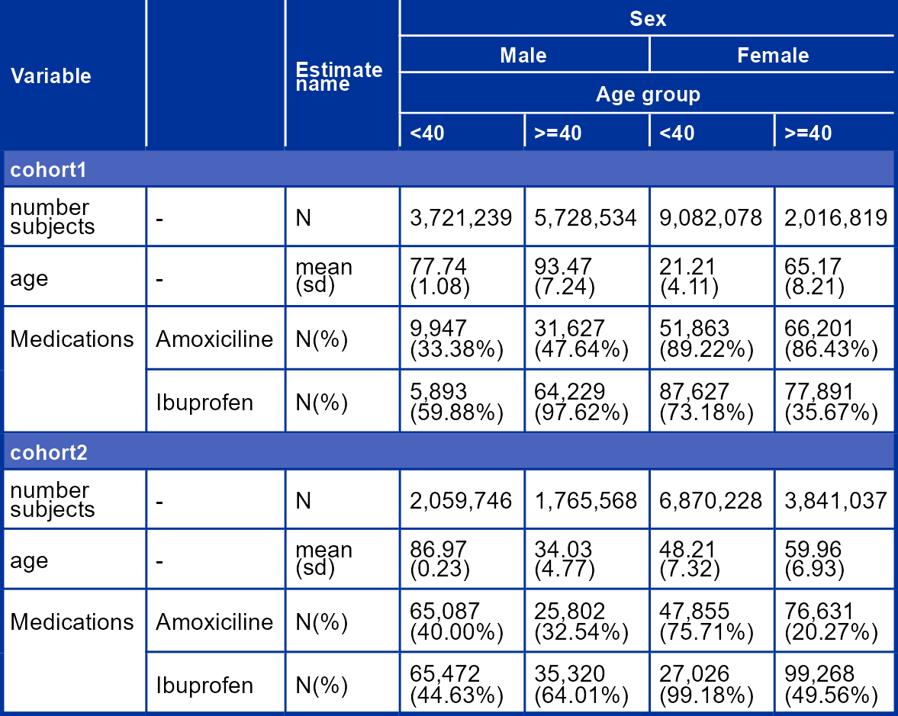

Package overview
visOmopResults offers a set of functions tailored to format objects of class <summarised_result> (as defined in omopgenerics package).
It provides functionalities to create formatted tables and generate plots. These visualisations are highly versatile for reporting results through Shiny apps, RMarkdown, Quarto, and more, supporting various output formats such as HTML, PNG, Word, and PDF.
Let’s get started
You can install the latest version of visOmopResults from CRAN:
install.packages("visOmopResults")Or you can install the development version from GitHub with:
# install.packages("pak")
pak::pkg_install("darwin-eu/visOmopResults")The <summarised_result> is a standardised output format utilized across various packages, including:
- CohortCharacteristics
- DrugUtilisation
- IncidencePrevalence
- PatientProfiles
- CodelistGenerator
- CohortSurvival
- CohortSymmetry
Although this standard output format is essential, it can sometimes be challenging to manage. The visOmopResults package aims to simplify this process. To demonstrate the package’s functionality, let’s start by using some mock results:
library(visOmopResults)
result <- mockSummarisedResult()Tables visualisations
Currently all table functionalities are built around 4 packages: tibble, gt, flextable, and datatable.
There are two main functions:
-
visOmopTable(): Creates a well-formatted table specifically from a<summarised_result>object. -
visTable(): Creates a nicely formatted table from any<data.frame>object.
Let’s see a simple example:
result |>
filterStrata(sex != "overall" & age_group != "overall") |>
visOmopTable(
type = "flextable",
estimateName = c(
"N(%)" = "<count> (<percentage>%)",
"N" = "<count>",
"mean (sd)" = "<mean> (<sd>)"),
header = c("sex", "age_group"),
settingsColumn = NULL,
groupColumn = c("cohort_name"),
rename = c("Variable" = "variable_name", " " = "variable_level"),
hide = "cdm_name",
style = "darwin"
)
Plots visualisations
Currently all plot functionalities are built around ggplot2. The output of these plot functions is a <ggplot2> object that can be further customised.
There are three plotting functions:
-
plotScatter()to create a scatter plot. -
plotBar()to create a bar plot. -
plotBox()to create a box plot.
Additionally, the themeVisOmop() function applies a consistent styling to the plots, aligning them with the package’s visual design.
Let’s see how we can create a simple boxplot for age:
library(dplyr)
result |>
filter(variable_name == "number subjects") |>
filterStrata(sex != "overall") |>
barPlot(
x = "age_group",
y = "count",
facet = "cohort_name",
colour = "sex",
style = "darwin"
)